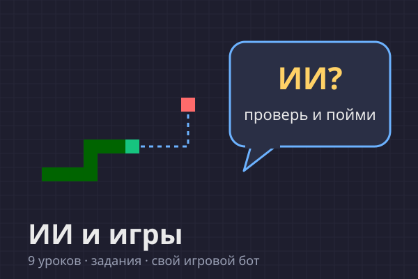

Что такое искусственный интеллект, где он ошибается и как сделать его своим напарником, когда пишешь игры. 9 уроков с заданиями — от «как он устроен» до своей фичи в игре.

ИИ-помощники уже умеют писать код. Значит ли это, что учиться программировать больше не надо? Наоборот. ИИ часто ошибается, а заметить ошибку может только тот, кто сам понимает код. Тот, кто просто копирует, — пассажир. Тот, кто понимает и проверяет, — пилот, а ИИ — его штурман. Этот курс учит быть пилотом.
В каждом уроке: зачем это нужно, короткое объяснение, готовые шаблоны запросов (кнопка «Копировать») и задания. Многие задания используют код из наших курсов игр — их лучше пройти раньше или параллельно.
Угадыватель следующего слова: как он устроен и почему он не «мозг».
Галлюцинации, выдуманные функции и уверенный тон. Ловим ИИ на ошибке.
Что нельзя рассказывать ИИ, чьё это творчество и когда это нечестно.
Формула хорошего запроса: роль, контекст, задача, рамки, формат.
Разбираем код Змейки с ИИ и проверяем, что поняли сами.
Сначала сам, потом подсказка, а не готовое решение.
Идеи, уровни, тексты, картинки: ИИ предлагает, ты выбираешь.
Змейка играет сама. Игровой ИИ — это правила, а не нейросеть.
Добавляешь фичу в свою игру вместе с ИИ и ведёшь дневник запросов.